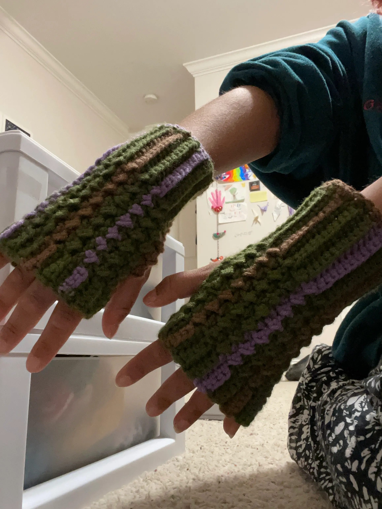

fingerless gloves for my cousin

more to come soon! this page is under construction.

it ended up being way too small (lol) but my neice got some use out of it.
this was a very full circle moment; when I was younger, I didn't own a single hat, scarf, or pair of gloves that wasn't knit by my naani.